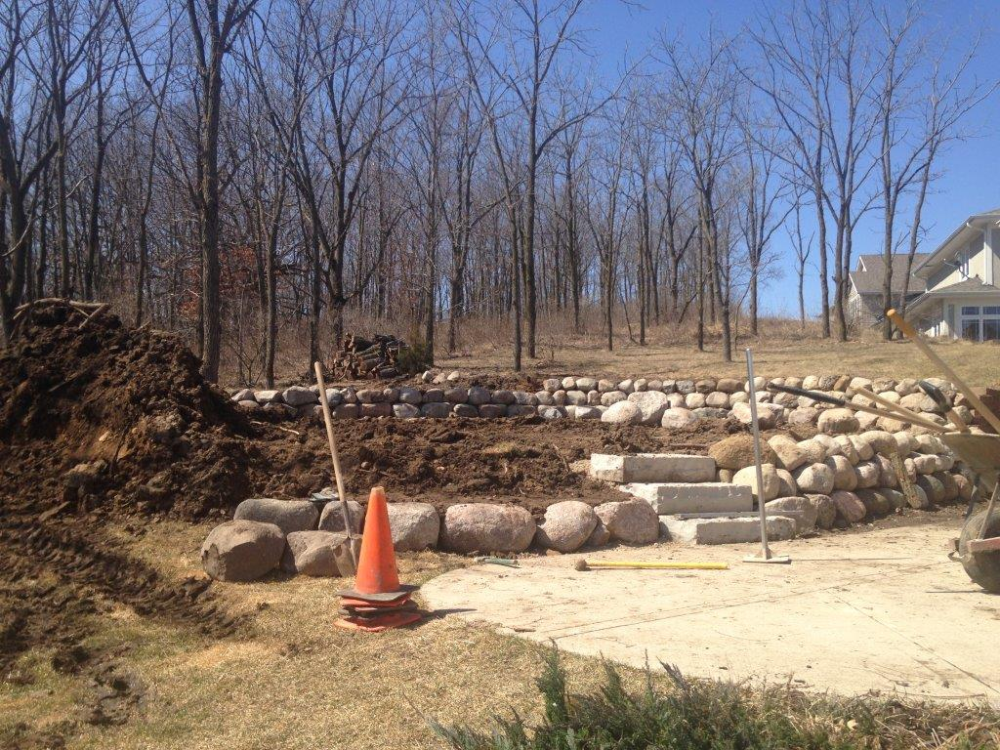
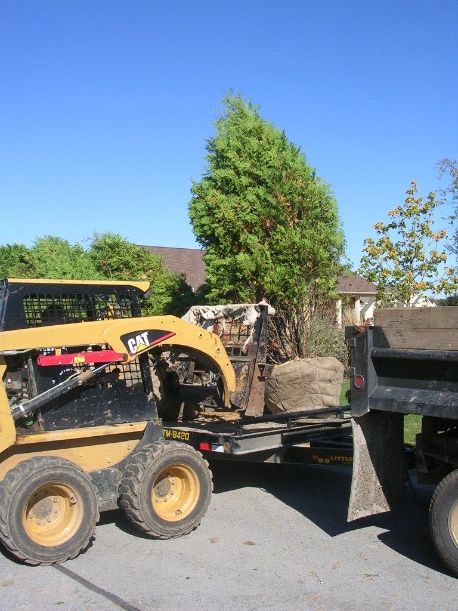
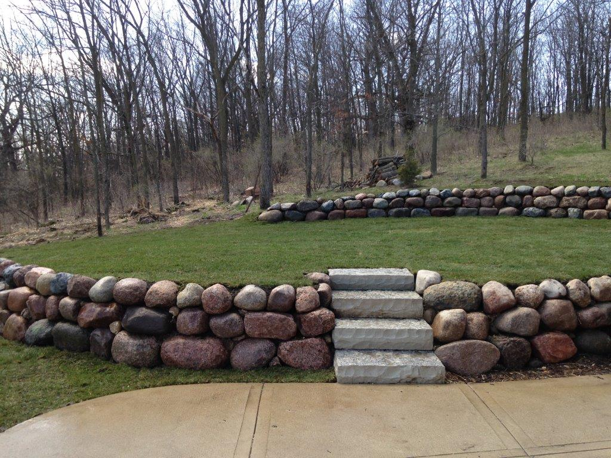

Frequently Answered Questions



New Lawns
- How often and how much should I water my newly seeded lawn?
- New lawns need to be kept moist. However, be aware that over-watering can cause the seed to float to the surface.
Water daily (more frequently if weather is hot and dry) until the seed has germinated; this will take 2-3 weeks. We tell customers to set their sprinklers on a timer and water for 3-5 minutes.
Once grass has sprouted, continue watering every 2-3 days until the new lawn is well established. - When should I cut my new lawn?
- Cut your new grass when it reaches a consistent height of 3-4 inches. Make sure that the blade on your lawn mower is sharp. Set the height of the lawn mower deck at 3 inches; you may adjust the height later to suit your needs.
- When should I fertilize and apply weed control products to my new lawn?
- Your new lawn should recieve a starter fertilizer when the seed is planted, but be careful; the product should not contain an herbicide (this can damage the new grass).
After your new lawn has been cut 3 or 4 times, you may apply a weed and feed product. We do not recommned fertilization during the hot summer months as it can burn the grass. The best times for a weed and feed application are early spring, late spring, and fall.
New Plantings
- How often and how much should I water my new trees and shrubs?
- Proper watering will help ensure the health and survival of your new plants. Where clay soil is prevalent, (as in southern Wisconsin), you must be careful not to over-water your plants. Here are some general suggestions.
More Questions
- Please feel free to call us at (262) 271-8765, or send an email to:
- hansonslandscapinginc@gmail.com